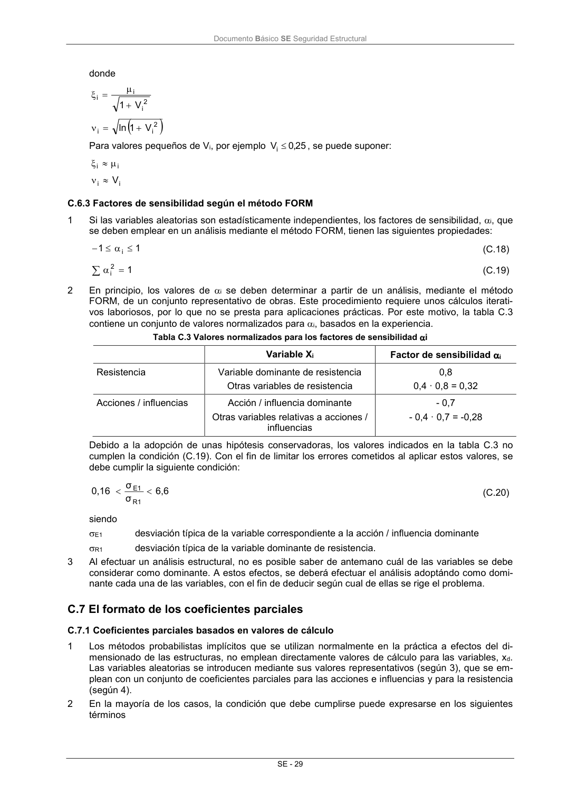

DB-SE Seguridad estructural · edición 2019-12-20 · capa oficial
Documento DB-SE-oficial · SHA-256 del PDF ec1fbfc51b28c4d62667aec480585b76fe31727ccf1615015a5d2d2677763f8f
Copia fiel del PDF fuente · Fuente oficial
Ficha de la disposición en la fuente oficial
Formatos: JSON del segmento · Markdown
2 i i V 1 ln Para valores pequeños de Vi, por ejemplo 25 ,0 Vi , se puede suponer: i i i i V C.6.3 Factores de sensibilidad según el método FORM 1 Si las variables aleatorias son estadísticamente independientes, los factores de sensibilidad, i, que se deben emplear en un análisis mediante el método FORM, tienen las siguientes propiedades: 1 1 i (C.18) 1 2 i (C.19) 2 En principio, los valores de i se deben determinar a partir de un análisis, mediante el método FORM, de un conjunto representativo de obras. Este procedimiento requiere unos cálculos iterati- vos laboriosos, por lo que no se presta para aplicaciones prácticas. Por este motivo, la tabla C.3 contiene un conjunto de valores normalizados para i, basados en la experiencia. Tabla C.3 Valores normalizados para los factores de sensibilidad i Variable Xi Factor de sensibilidad i Resistencia Variable dominante de resistencia Otras variables de resistencia 0,8 0,4 · 0,8 = 0,32 Acciones / influencias Acción / influencia dominante Otras variables relativas a acciones / influencias - 0,7 - 0,4 · 0,7 = -0,28 Debido a la adopción de unas hipótesis conservadoras, los valores indicados en la tabla C.3 no cumplen la condición (C.19). Con el fin de limitar los errores cometidos al aplicar estos valores, se debe cumplir la siguiente condición: 6,6 σ σ 0,16 R1 E1 (C.20) siendo E1 desviación típica de la variable correspondiente a la acción / influencia dominante R1 desviación típica de la variable dominante de resistencia. 3 Al efectuar un análisis estructural, no es posible saber de antemano cuál de las variables se debe considerar como dominante. A estos efectos, se deberá efectuar el análisis adoptándo como domi- nante cada una de las variables, con el fin de deducir según cual de ellas se rige el problema.
